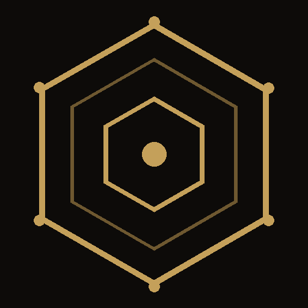
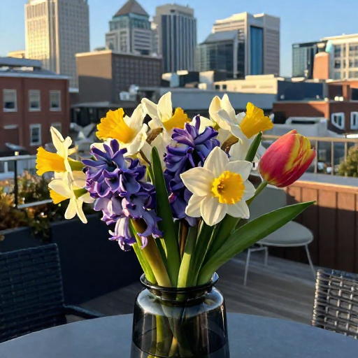

Bennett Landman
A small shelf in a very large library.
Medical imaging & AI research at Vanderbilt's MASI Lab by day; apps, generative art, and the occasional piece of literary ephemera by night.
Projects


AI Flower Vase
A digital vase on my desk that regenerates its own AI-rendered photo every minute — a fresh bouquet reflecting the real time of day, the real weather, and how many days it's been since the "flowers" went out. Started as a Vanderbilt "Studio in AI" project; the rewrite and everything since was built with Claude.